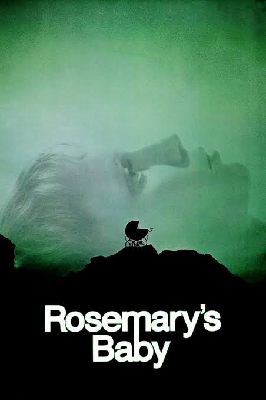
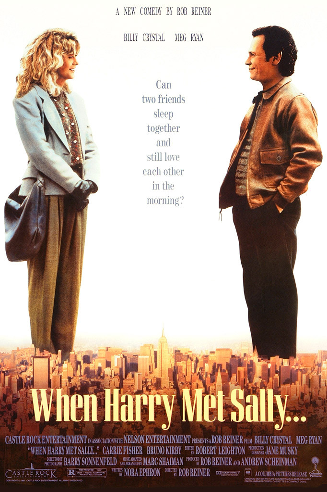

VoltGo
Terminado
Sistema de gestão de postos de carregamento para veículos elétricos.
- JavaScript
- SQL
- JSON
CV & Portfólio
Estudante em reconversão e formação ServiceNow
Disponível para novos projetos e oportunidades
Braga, Portugal
Olá!
Sou o Rui Silva e estou atualmente a frequentar uma formação na área de desenvolvimento de software. Tenho vindo a explorar diferentes áreas da programação, desde desenvolvimento web e bases de dados até desenvolvimento de aplicações e ferramentas low-code.
Neste momento, estou a desenvolver conhecimentos em HTML, CSS, JavaScript, SQL e ServiceNow, enquanto procuro perceber quais destas áreas quero aprofundar no futuro.
Gosto de aprender através de projetos práticos e de perceber como diferentes tecnologias podem ser combinadas para criar aplicações úteis e funcionais. Ao longo da minha formação tenho trabalhado em projetos que envolvem programação, bases de dados e desenvolvimento de soluções completas.
Este website é uma pequena representação do meu percurso, dos projetos em que tenho trabalhado e de algumas das coisas que me interessam fora da programação.
Formação
Configuração de instâncias, fluxos de trabalho e automação de processos de negócio.
A Aprender
Lógica algorítmica, manipulação do DOM e desenvolvimento orientado a objetos.
2025-2026
Acompanhamento dos processos de qualidade e segurança alimentar, assegurando o cumprimento dos procedimentos internos e a conformidade de matérias-primas e produtos. Experiência no registo e acompanhamento de não conformidades, gestão de informação de rastreabilidade e lotes, e utilização do software PHC para registo e consulta de informação operacional.
2022-2025
Desenvolvimento de projeto de investigação na área da biotecnologia e resistência antimicrobiana, com foco no estudo de microrganismos marinhos como fonte de novas moléculas terapêuticas. Planeamento e execução experimental, análise e gestão de dados, elaboração de documentação técnica e apresentação de resultados. Média final de 18/20.
2019-2022
Formação nas áreas de bioquímica, biologia molecular, química e técnicas laboratoriais.
Terminado
Sistema de gestão de postos de carregamento para veículos elétricos.
Website pessoal desenvolvido como projeto de formação em HTML e CSS.

Kafka On The Shore
Haruki Murakami
Progresso da leitura
Página 383 de 574

Flores Para Algernon
Daniel Keyes

A Cor Púrpura
Alice Walker

Kim Jiyoung, Nascida 1982
Cho Nam-joo


